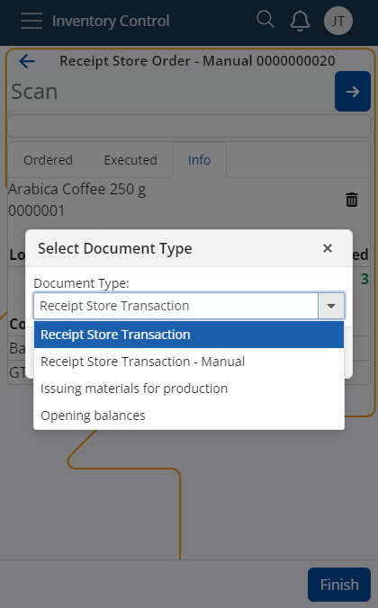

Use the Document Type from Routings to create a new document
In the Inventory Control system, when creating a new document, both the settings in Inventory Control and the Document Routes defined in the corresponding Store Order are considered.
This ensures that the type of Transaction defined in the Document Route is considered, along with the predefined settings in Inventory Control.
This feature specifically applies to the Receive and Issue functionalities, providing a comprehensive approach to selecting the appropriate document type based on multiple criteria.

Validation Process
Document Route Filtering: When creating the transaction, the system will filter the Document Routes based on the following fields in the Document TypesFormRoutings panel of the Store Orders data type:
- ProcessEvent: Must be "Change of state".
- ConditionStatesBitMask: Must include "Released".
- Destination DocumentType: Must be a document of the data type "Transactions".
Route Activity Timing: At the moment of creating the transaction, the route’s activity must fall within the period specified by the Activation Date and Deactivation Date fields. It is important to note that both fields can also be empty.
Additional Conditions:
- IsActive: Must be "True".
- ConditionEnterpriseCompany: Must match either the Store order's EnterpriseCompany or be empty.
- AllowedGenerationTypes: Must be set to "Only Manually".
After filtering, you need to retain only the information about the Document Type from the remaining routes.
Cases Post Filtering and Considering Inventory Control Settings
No Valid Result from Document Routes and No Document Type in Inventory Control Settings:
- If no valid Document Type is returned from the Document Routes and there is no Document Type selected in Inventory Control for the current function (Receive/Issue), an error should be thrown: "No document type selected".
- Currently, this error is thrown if no Document Type is selected in Inventory Control. Post-development, this error should be thrown only if no valid Document Type is found in the Document Routes.
No Valid Result from Document Routes but Document Type Specified in Inventory Control Settings:
- If no valid Document Type is returned from the Document Routes but a Document Type is specified in Inventory Control for the current function (Receive/Issue), then a transaction of the Document Type specified in Inventory Control should be created.
Only One Valid Result from Document Routes:
- If only one result is returned from the Document Routes (or multiple results all pointing to the same Document Type), that Document Type is selected regardless of Inventory Control settings.
Multiple Valid Results from Document Routes:
- If multiple different results are returned from the Document Routes, a selection menu should be displayed with a dropdown list containing all returned results from the Document Routes plus the Document Type specified in Inventory Control. The dropdown list should have a default value.
- The default value in the dropdown list is determined as follows:
- If at least one of the returned results matches the Document Type specified in Inventory Control, that Document Type is chosen as the default.
- If none of the returned results match the Document Type specified in Inventory Control or if no Document Type is specified in Inventory Control, the default value is the Document Type with the smallest Code value among the routes (DocumentType.Code).
Example Scenario:
- You have specified "Store Receipt Transaction" as the Document Type in Inventory Control Settings.
- There are 11 defined document routes under "Store Order for Inventory Control," out of which 8 are invalid based on the specified filters.
After filtering, 3 valid routes remain, each with a different Document Type from the Transactions data type, none matching the type specified in Inventory Control.
- Access Inventory Control > Warehouse / Receive.
- Open StoreOrder for Inventory Control - 00001.
Note
The screenshots taken for this article are from v24 of the platform.